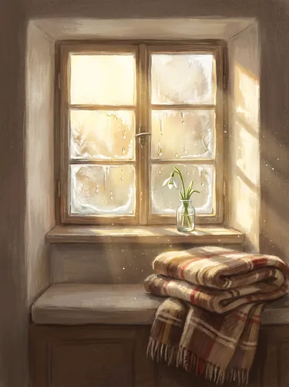

Das Winterhaus · Die Probenacht
Drei Minuten aus dem dritten Raum
Du hörst den Anfang der dritten Nacht. Der Raum heißt Das Fenster und gehört zum März, dem Monat, in dem das Licht zurückkommt.

Spielt es nicht? Hier direkt anhören
So hörst du am besten: Such dir einen ruhigen Platz, lehne dich an oder leg dich hin. Wenn du magst, schließe die Augen. Der Ausschnitt endet am Fenster. Im Haus geht die Nacht dort weiter.
Die Frage dieser Nacht
Was darf im März wieder hell werden?
Im Winterhaus schreibst du deine Antwort in drei Zeilen. Niemand liest sie. Auch ich nicht.
So ist es an zwölf Abenden
Vom 24. Dezember bis 4. Januar öffnet sich jeden Abend um 19 Uhr ein Raum für dich. Du gehst die Rauhnächte begleitet:
- dein persönliches Rauhnächte-Reading mit mir, 30 Minuten auf Zoom, vor den Nächten
- drei Live-Abende am 21. Dezember, 30. Dezember und 5. Januar, jeweils 19 Uhr
- zwölf Räume, jeden Abend zehn Minuten in meiner Stimme und eine Frage
- dein Jahresbuch aus deinen eigenen Antworten
Anmeldung bis 15. Dezember, weil dein Reading davor stattfindet.
Susanne
Your Balance · Susanne Wachter · your-balance.at · Impressum · Datenschutz